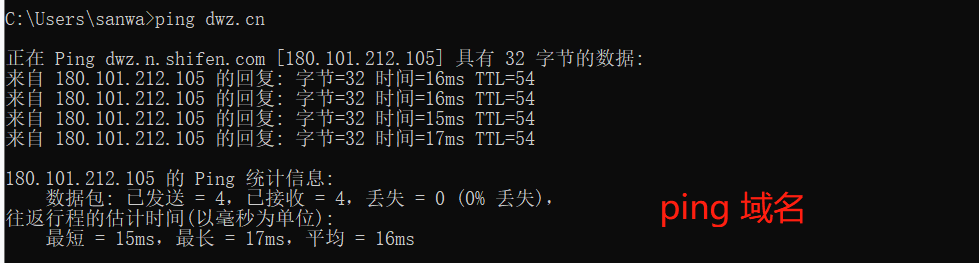
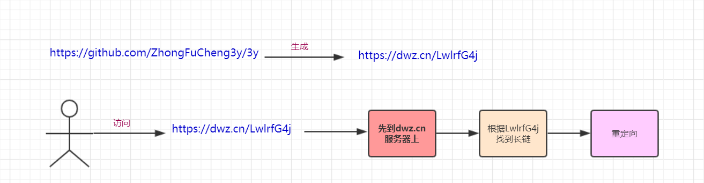
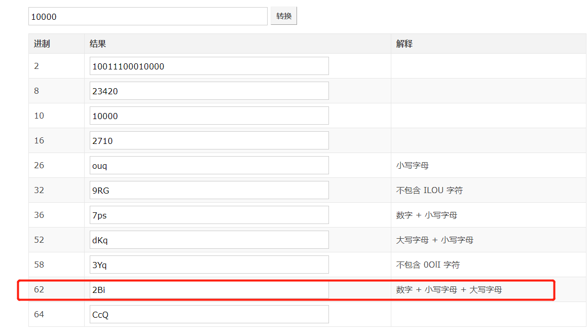
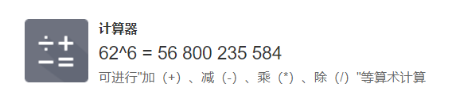
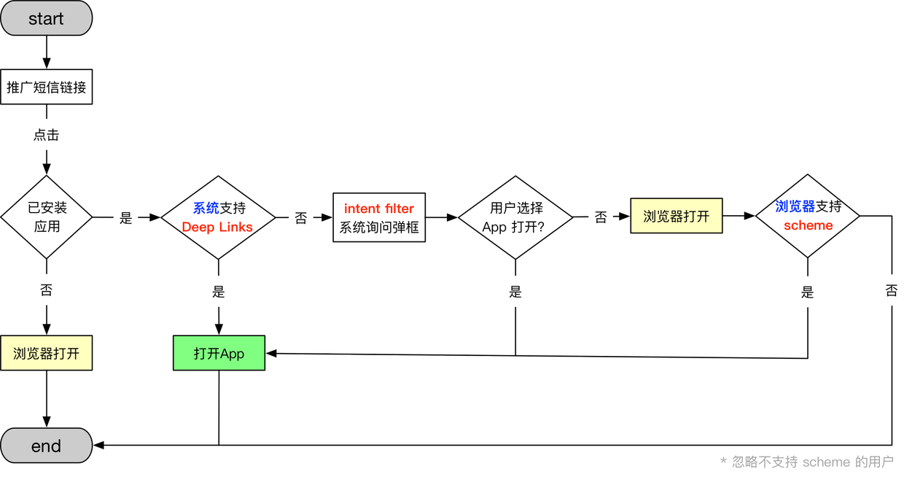

原文连接:https://www.cnblogs.com/Java3y/p/11976312.html
前言
只有光头才能变强。
文本已收录至我的GitHub仓库，欢迎Star：https://github.com/ZhongFuCheng3y/3y
最近接了一个需求，涉及到了短链接的相关的知识，于是去查阅了相关的资料，在这里给大家整理分享一下。
我帮阿里云推广服务器89/年，229/3年，买来送自己，送女朋友马上过年再合适不过了，买了搭建个项目给面试官看也香，还可以熟悉技术栈，(老用户用家人账号买就好了，我用我女朋友的😂）。扫码或者点击购买
一、短链接介绍
举个例子，现在我的GitHub的地址是这个：https://github.com/ZhongFuCheng3y/3y (36个字符)
我通过百度的短链接服务可以将上面的地址转成https://dwz.cn/LwlrfG4j(23个字符)
那我为什么要将原有的URL转成较短的链接呢？比如我们发短信提醒用户去XXX，XXX有优惠活动，在文案上往往会带有一个链接进行跳转，方便用户快速去到对应的活动落地页。
而短信的发送是需要成本的，短信的成本主要有两方面组成：
- 发送的人数（发的人越多，自然短信的花费就越大，这个我就不解释了）
- 短信发送的字数（比如，文案总字数超过70个字，那就算两条短信计费，超过140个字就算三条短信计费）
所以在发送短信给用户时：要么就投放更加精准优质的用户，以便控制好发送的数量，要么就尽可能控制文案的字数。
显然，如果在短信上配上普通的URL，那真正的文案可写的字数就没多少了。于是我们可以发现，各大公司的短信推送的URL都是短链接。
比如在一些平台发布消息时会限制字数，如果我们的发的URL过长就很容易就被限制住了：
使用短链接的好处：短、字符少、美观、便于发布、传播。
二、短链接它是怎么干的呢？
我们先回到生成好的短链上https://dwz.cn/LwlrfG4j
虽然这个链接看起来有点奇怪，但他终究还是一个链接，从URL的特征我们可以分出：
dwz.cn是域名LwlrfG4j是参数

我们在浏览器请求一下短链接看看是什么情况：
短链接的原理其实就是：
- 将长链接通过一定的
手段生成一个短链接 - 访问短链接时实际访问的是短链接服务器，然后根据短链接的参数找回对应的长链接
- 重定向跳转

2.1 核心的要解决的问题
通过上面的分析我们可以知道的是，我们实际核心要做的是怎么从LwlrfG4j类似这样的参数找到对应的完整URL：https://github.com/ZhongFuCheng3y/3y
脑子第一时间想到的是：能不能通过一个压缩算法将https://github.com/ZhongFuCheng3y/3y压缩更小的字符？
显然，不能，压缩算法大多数都是针对大文本才奏效，本身的URL也不见得有多大...压缩出来肯定比原来的URL还大。
脑子第二时间想到的是：能不能用Hash算法？还是不能，用Hash存在哈希碰撞的问题
- 什么是哈希碰撞？两个不相同的字符串(值)进行Hash操作后，得到的哈希值相同。
- 这就意味着，两个完全不同的长链得到的哈希值一模一样，而我的短链是依赖哈希值去找到长链的(此时一个短链对应多个长链，这不合理)。
脑子第三时间想到的是？脑子想不到了。
现在业内用得比较多的是发号器（ID自增)+62进制编码：
- 比如，我将
https://github.com/ZhongFuCheng3y/3y看作是10000，然后将10000进行62进制编码得到的结果是：2Bi

那我的短链URL就可以弄成https://3y.cn/2Bi，其中3y.cn是域名，2Bi是经过62进制转换后的参数。
为什么要用62进制转换？64进制转换倒是听得多了
- 62进制转换是因为62进制转换后只含数字+小写+大写字母。而64进制转换会含有
/,+这样的符号（不符合正常URL的字符） - 10进制转62进制可以缩短字符，如果我们要6位字符的话，已经有560亿个组合了。

总结：
- ID自增后，转成62进制，在DB保存映射关系，生成短链接
三、短信的链接直接跳转到APP
以下内容来源：https://sq.163yun.com/blog/article/158315832059072512 ，作者：西西吹雪
综合起来就是：
- 通过 Deep Links（iOS 则是Universal Links），可以实现点击短信链接直接唤起 App；
- 如果系统因为各种原因不支持 Deep Links，备选方案是
intent filter，不过会出弹框让用户选择用哪个 App 打开链接； - 如果用户没有选择我们的 App 而是选择了浏览器打开，则通过
自定义 scheme尝试唤起 App； - 由于技术和成本问题，我们忽略不支持
自定义 scheme的浏览器。

最后
这篇文章主要是简单了解一下短链接的相关知识，一个完备的短链服务肯定还要考虑更多的事，这里我就不展开了（毕竟我也没真正写过，可以在下方的链接继续学习）~
更多资料查阅：
- https://www.zhihu.com/question/29270034/answer/46446911
- https://hufangyun.com/2017/short-url/
- https://blog.csdn.net/c10WTiybQ1Ye3/article/details/78098840
本已收录至我的GitHub精选文章，欢迎Star：https://github.com/ZhongFuCheng3y/3y
乐于输出干货的Java技术公众号：Java3y。公众号内有300多篇原创技术文章、海量视频资源、精美脑图，关注即可获取！

非常感谢人才们能看到这里，如果这个文章写得还不错，觉得「三歪」我有点东西的话 求点赞 求关注️ 求分享👥 求留言💬 对暖男我来说真的 非常有用！！！
创作不易，各位的支持和认可，就是我创作的最大动力，我们下篇文章见！